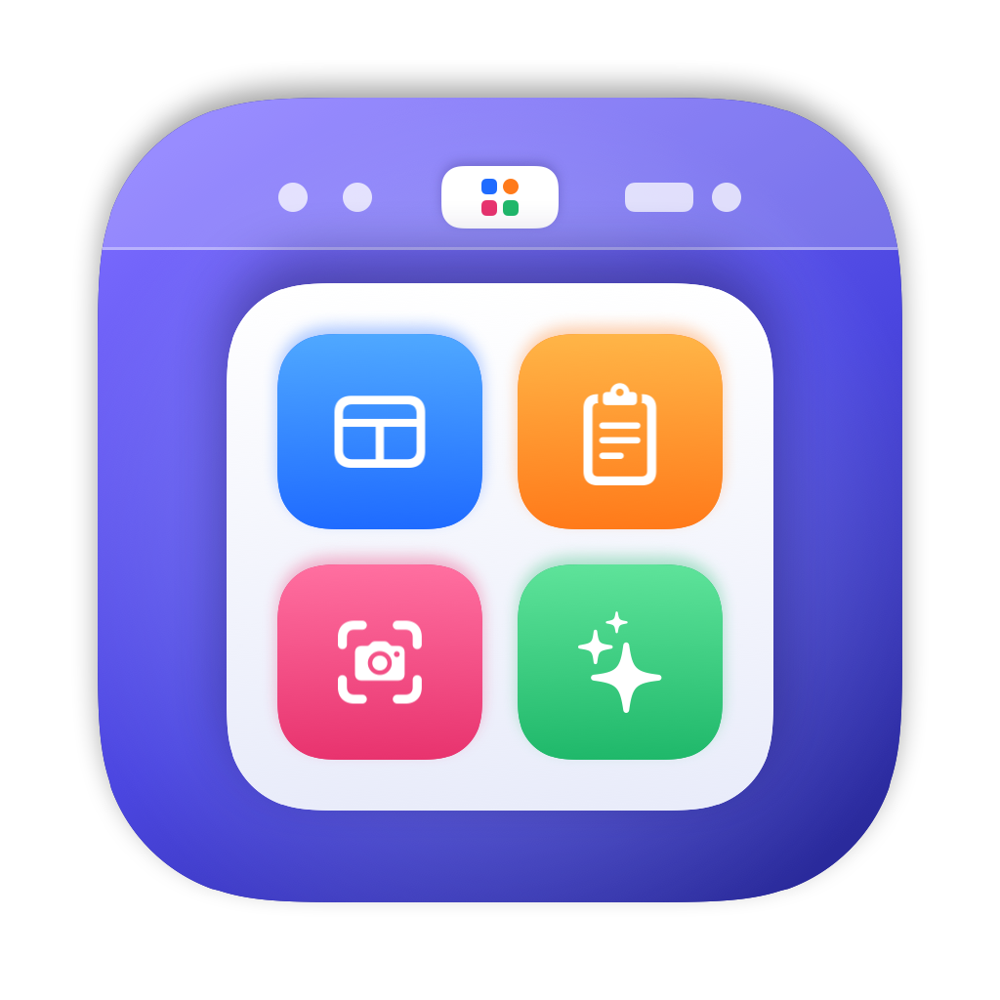
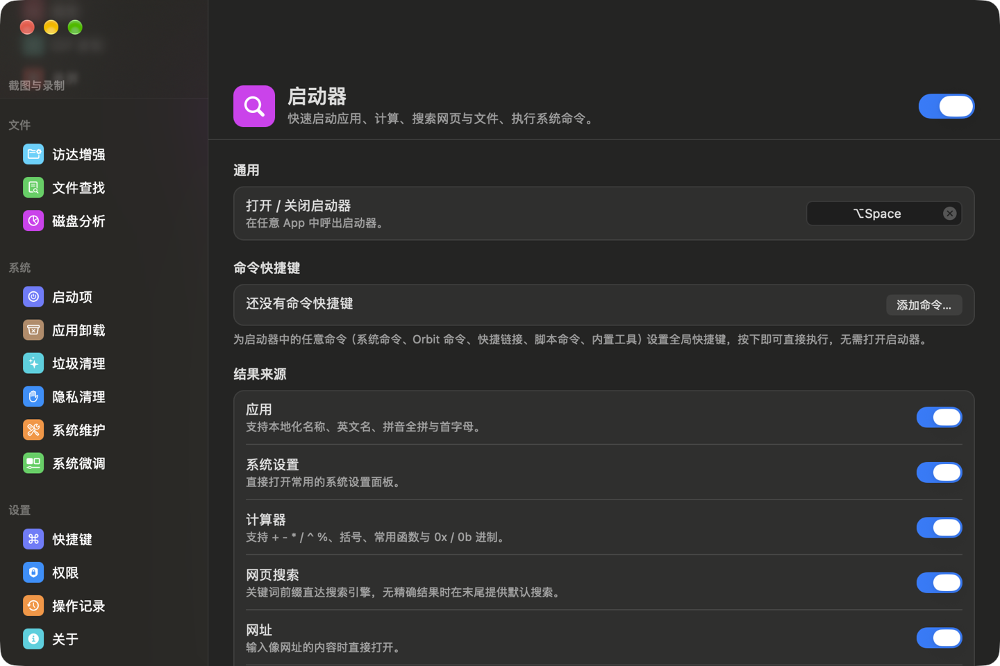

一个菜单栏图标，替代十几款效率软件。启动器、窗口管理、剪贴板、菜单栏整理、截图录屏、访达增强、文件查找、应用卸载与垃圾清理，都在一个轻量进程里。 One menu bar icon instead of a dozen utilities. Launcher, window management, clipboard history, menu bar cleanup, screenshots & recording, Finder extras, file search, app uninstaller and system cleaner — in one lightweight app.

所有快捷键都能在“快捷键”页修改，设置可以导出后在另一台 Mac 上一键还原。Every shortcut is customizable, and your settings can be exported and restored on another Mac.
不确定芯片类型？打开「苹果菜单 › 关于本机」，看“芯片”或“处理器”一栏。Not sure which chip you have? Open › About This Mac and check “Chip” or “Processor”.
Orbit Finder。To use the Finder context menu, enable Orbit Finder in System Settings › General › Login Items & Extensions › Finder.